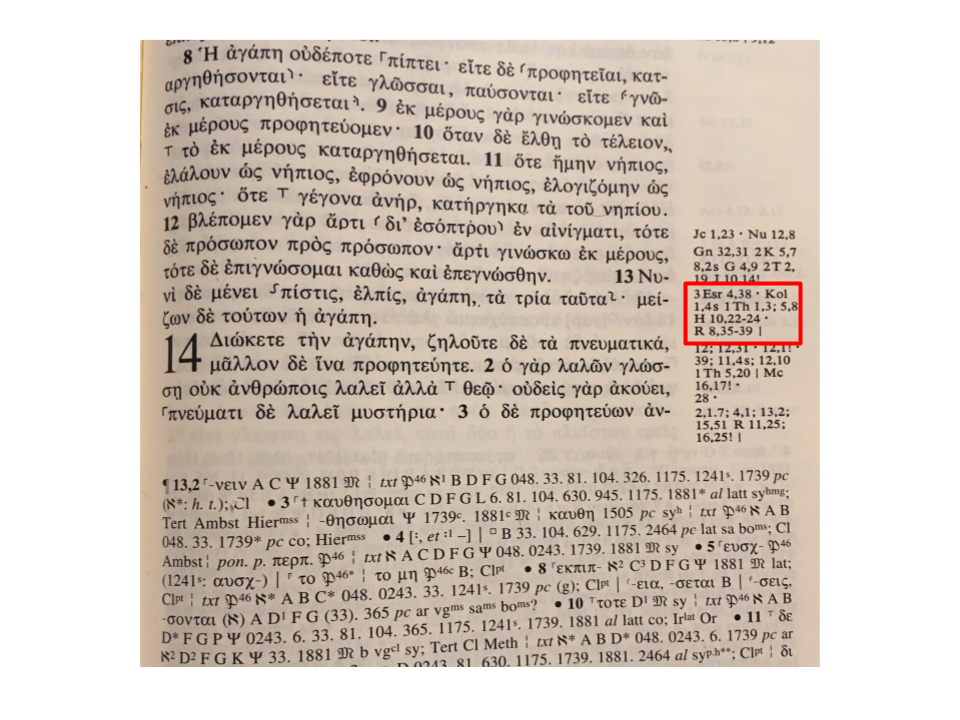

Dec 18, 2017
rOpenSci HQ
Maëlle Salmon, an editor with our rOpenSci onboarding software review team, represented rOpenSci at a hackathon event in Ghent, Belgium recently. The event (hashtag #EAB2017) was a event centered around doing software things in R with an ecology focus. Find out more about the event at https://methodsblog.wordpress.com/2017/11/16/hackathon-challenges/. Maëlle gave a talk on tips for developing R packages, of which she’s made many. She wrote up a blog post on her talk: How to develop good #rstats packages (for open science)
Carl Boettiger and Scott Chamberlain participated in a codefest/hackathon last week centered around Phenoscape - a knowledebase of computable phenotypes for studies of evolution and genetics. Check out the repo at https://github.com/phenoscape/KB-DataFest-2017/, the project ideas, and the teams. There’s a small but informative set of tweets on the event at the hashtag #phenohack. Carl and Scott worked on NeXML/JSON-LD interoperability with a great team including Mark Holder, Gaurav Vaidya, Matt Yoder, and Rutger Vos. There’s a in progress implementation for going between NeXML and JSON-LD at cboettig/nexld.
Software 📦
New packages
- A new package
tidyhydat(v0.3.1) is on CRAN. Check out the tidyhydat vignette to get started. You can read the rOpenSci software review at https://github.com/ropensci/onboarding/issues/152. Repository on GitHub - A new version (
v1.0) ofcleanEHRis on CRAN. Check out the cleanEHR vignettes to get started. This isn’t the first version of this package on CRAN, but is the first version on CRAN under rOpenSci. You can read the rOpenSci software review at https://github.com/ropensci/onboarding/issues/102. Repository on GitHub
Releases
- A new version (
v0.4.3) ofiheatmapris on CRAN. See the NEWS for details. Check out the iheatmapr docs to get started. Repository on GitHub - A new version (
v0.2) ofeuropepmcis on CRAN. See the release notes for details. Check out the europepmc vignettes to get started. Repository on GitHub - A new version (
v0.1.1) ofbomrangis on CRAN. See the NEWS for details. Check out the bomrang docs to get started. Repository on GitHub - A new version (
v2.5.0) ofFedDatais on CRAN. See the NEWS for details. Check out the FedData docs to get started. Repository on GitHub - A new version (
v1.0.10) oflingtypologyis on CRAN. See the release notes for details. Check out the lingtypology docs to get started. Repository on GitHub - A new version (
v1.1.2) ofGSODRis on CRAN. See the NEWS for details. Check out the GSODR vignettes to get started. Repository on GitHub - A new version (
v0.2.2) ofgetCRUCLdatais on CRAN. See the NEWS for details. Check out the getCRUCLdata docs to get started. Repository on GitHub - A new version (
v2.9) ofhunspellis on CRAN. See the release notes for details. Check out the hunspell vignette to get started. Repository on GitHub - A new version (
v0.20.0) ofgit2ris on CRAN. See the NEWS for details. Check out the git2r README to get started. Repository on GitHub - A new version (
v1.1) ofspellingis on CRAN. See the NEWS for details. Check out the spelling README to get started. Repository on GitHub
Software Review ✔
We accept community contributed packages via our onboarding system - an open software review system, sorta like scholarly paper review, but way better. We’ll highlight newly onboarded packages here. A huge thanks to our reviewers, who do a lot of work reviewing (see the blog post on our review system), and the authors of the packages!
If you want to be a reviewer fill out this short form, and we’ll ping you when there’s a submission that fits in your area of expertise.
The following package recently went through our onboarding process and has been approved!
- cleanEHR > The Critical Care Clinical Data Processing Tools
- Author: Sinan Shi
- Issue: ropensci/onboarding#102
- Reviewers:
The following two packages were recently submitted for review:
- fingertipsR > Fingertips Data for Public Health
- Author: Sebastian Fox
- Issue: ropensci/onboarding#168
- Reviewers:
- rdflib > Tools to Manipulate and Query Semantic Data
- Author: Carl Boettiger
- Issue: ropensci/onboarding#169
- Reviewers: not assigned yet
On the blog
.rprofile series
Our third post is out in our .rprofile series: .rprofile: Jenny Bryan by Kelly O’Briant. Jenny on Twitter -> https://twitter.com/JennyBryan

Keep an eye out for more posts in this series.
main blog
David Ranzolin wrote about his package rpersues and his experience with rOpenSci software review in a blog post: Exploratory Data Analysis of Ancient Texts with rperseus. Check out the review and shout out to the reviewers Ildikó Czeller and François Michonneau.

Use cases
If you’ve used rOpenSci software in a blog post or a paper, tell us on the discussion forum and we’ll share it with our community here.
The following three works use/cite rOpenSci or rOpenSci software:
- Ramasubramanian and Albrecht used stplanr in their book chapter Placemaking: Why Everything Is Local in the book The Urban Book Series 1
- Marx et al. used pdftools in their white paper Synthesis Report on Disaster Risk Reduction and Climate Change Adaptation in Germany 2
- Armstrong et al. used monkeylearn in a book The 2016 Presidential Election: The Causes and Consequences of a Political Earthquake. We can’t link to an open access version but there is a screenshot showing discussion of the use of the package. 3
In the news
There was a nice tweet about our rfishbase package:
#rstats package rfishbase is making my day. https://t.co/tNWNWkfGl0 @BrentBHughes @ecophyte
— Wendel Raymond (@wendel_raymond) December 8, 2017
Najko Jahn, maintainer of the rOpenSci packages europepmc and roadoi presented a nice use case with europepmc in a vignette in said package
Finally on CRAN, including @ma_salmon great function to avoid an #evergreenreviewgraph
— Najko Jahn (@najkoja) December 11, 2017
Use-case:https://t.co/4iNQMkp4WU https://t.co/HOaNw6R1Ak
Submit news to rOpenSci
Reach out to us with your news suggestions by sending us an email info@ropensci.org or by contacting us on Twitter @ropensci
Keep up with rOpenSci
- Mailing list: Sign up with an email address to get this newsletter sent to your inbox -> ropensci.org/#subscribe
- Alternatively, you can subscribe to this newsletter via our XML feed at https://news.ropensci.org/feed.xml or our JSON feed at https://news.ropensci.org//feed.json
- rOpenSci on Twitter: @ropensci
- The rOpenSci blog at ropensci.org/blog - you can subscribe in any RSS aggregator, or manually via https://ropensci.org/feed.xml. We also announce new blog posts on our Twitter account.
Footnotes
-
Ramasubramanian, L., & Albrecht, J. (2017). Placemaking: Why Everything Is Local. The Urban Book Series, 87–110. https://doi.org/10.1007/978-3-319-68041-5_5 ↩
-
Marx, S., Barbeito, G., Fleming, K., Petrovic, B., Pickl, S., Thieken, A., & Zeidler, M. 2017. Synthesis Report on Disaster Risk Reduction and Climate Change Adaptation in Germany. Chicago http://bit.ly/2kfB5td ↩
-
Armstrong, J. S., Berger, R., Boatright, R., Brewer, M., Cuzán, A. G., Dye, R. G., … & Jones Jr, R. J. (2017). The 2016 Presidential Election: The Causes and Consequences of a Political Earthquake. Lexington Books. Chicago http://bit.ly/2B8Lilz ↩